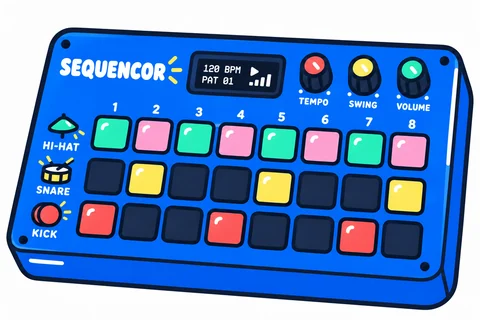

Een sequencer is een machine die voor jou drumt. Jij zegt van tevoren wanneer hij moet slaan, en hij doet precies wat je zegt. Steeds opnieuw, en nooit te vroeg of te laat.
Hoe maak je dan een ritme? Door vakjes aan te klikken. Kijk naar het bord hieronder. Elk onderdeel van het drumstel heeft een eigen rij: een voor de kick, een voor de snare en een voor de hihat. De tijd loopt van links naar rechts.
Tik een vakje aan en druk op afspelen. De vakjes worden een voor een afgespeeld, en het vakje dat klinkt wordt groen: dat is de afspeellijn. Zet vakjes aan of uit en hoor meteen wat er gebeurt.
Geen inspiratie? Begin dan eens met een bestaande beat: Of maak er helemaal een van jezelf:
Sleep aan de schuifjes en hoor wat er verandert. De beat op het bord speelt gewoon door, dus je hoort meteen wat het met je ritme doet. Heb je elk vakje op het bord en elk schuifje hier een keer aangeraakt? Dan gaat er onderaan iets open.
Nu speel jij de beat die je net hebt gemaakt, vier maten lang. Raak de vormen als ze op de lege vorm onderaan staan, met A, S en D of door op de knoppen te tikken. Elke noot die je raakt is een punt. Verander je de beat, dan begint je beste score weer bij nul.